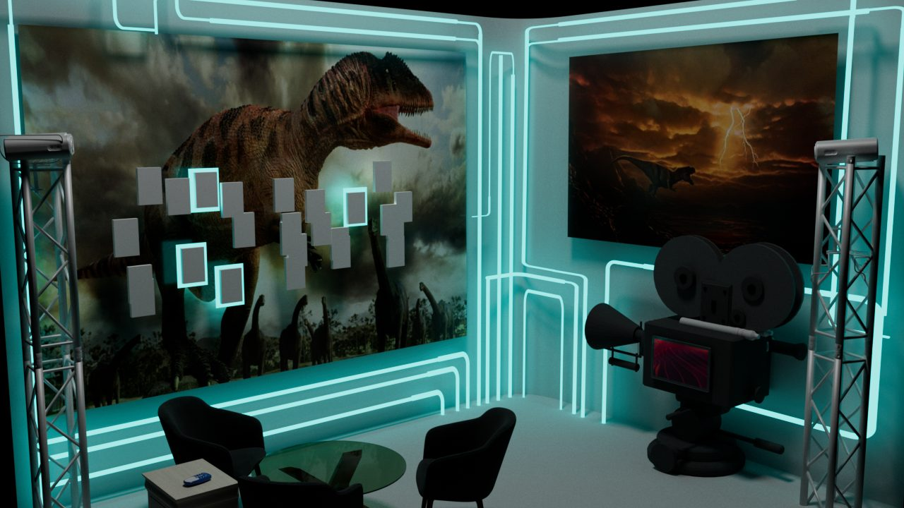
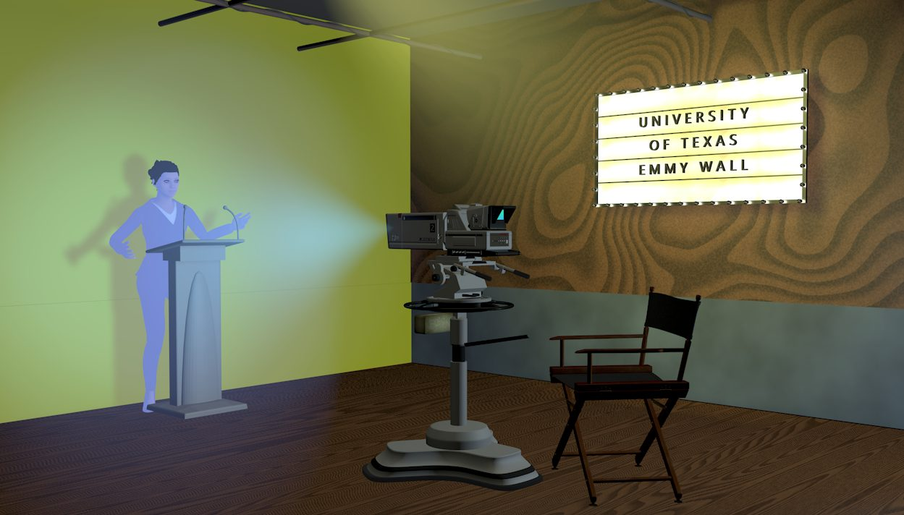
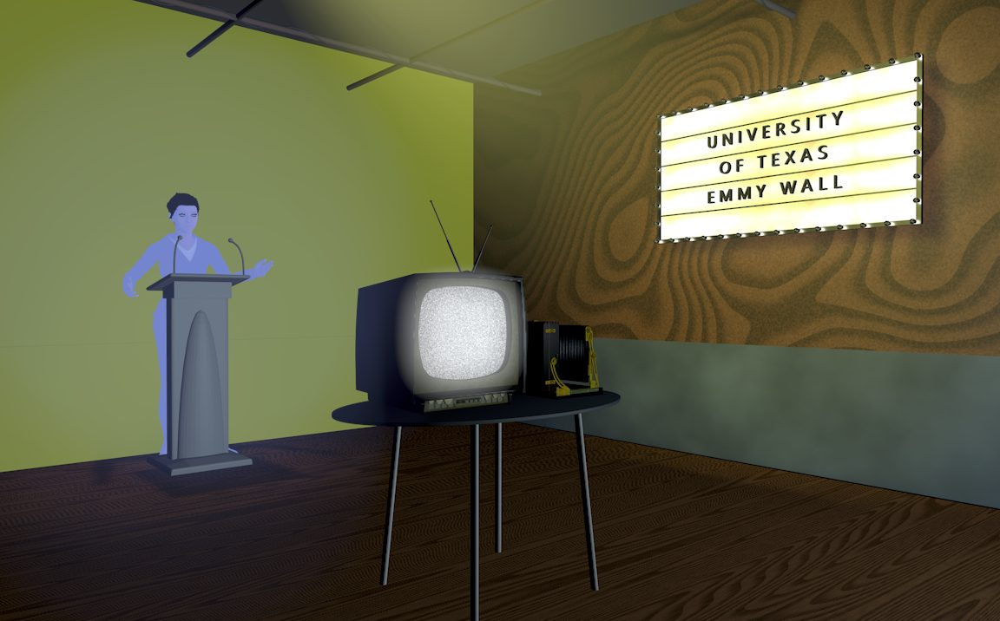
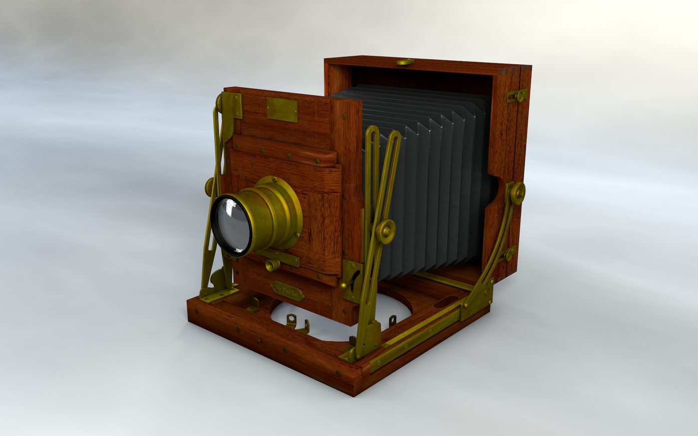

R&D
I build pipelines. Live production is a schedule problem as much as a creative one — the idea has to survive contact with a review cycle, a load-in, and a broadcast clock. So when a step in that chain is slow, I build the tool that removes it.
Four of those builds are below. Each one started because something took too long or could not be shown to a client fast enough, and each one ended up changing what was possible to pitch. After them is an installation from the Texas Immersive Institute, where the build was the experience itself.
The builds
TouchDesigner × StreamDiffusion Real-time AI visuals
A real-time diffusion pipeline running inside TouchDesigner, with the model reacting live to incoming audio, video, or sensor data instead of rendering offline. Hugging Face models are pulled into the TouchDesigner network and blended with custom shaders and procedural elements.
What it made possible: generated imagery that responds to a live performance on stage rather than being pre-baked to a timeline — the difference between playing back a video and running a visual instrument.
ComfyUI — custom fashion LoRA Concepting at pitch speed
A node-based Stable Diffusion workflow with a fashion LoRA I trained myself, plus ControlNet passes, IP-Adapter style transfer, and upscaling chains. The series runs one consistent look across Tokyo, Detroit, Mexico City, and Berlin.
What it made faster: a look book that used to mean a shoot or a week of renders now takes an afternoon — which means a client sees the idea while it is still an idea, and the expensive production only starts on something already approved.


OSL shaders Procedural look development
Custom Open Shading Language shaders that generate texture and atmosphere procedurally instead of from painted maps — neon, glow, fog, and surface detail driven by parameters rather than by files.
What it made faster: a look becomes a set of dials. Changing the mood of a scene is a slider move, not a re-texture, so the answer to "can we see it warmer?" is minutes instead of a day.
Generative video Prototyping before production
Concept films built with generative video tools, then graded and cut like real footage — runway looks, brand moments, and editorial sequences that exist before anything is physically produced.
What it made possible: pitching a moving idea instead of a board. A client can watch the thing rather than imagine it, and the decision to build it for real gets made on something they have already seen move.
Installations
Vox Temporis — Interactive Emmy Wall Texas Immersive Institute · UT Austin · 2024
An immersive installation telling the story of UT Austin's Emmy winners and its long history in entertainment. The centrepiece was “Phil,” an old film projector that Sam and I turned into a talking guide. A voice bot inside it tells visitors the history, and a tablet built into its side door shows the photos to go with it. I designed the space in 3D, from the first podium-and-TV mockups to the final retro-futuristic lounge, and planned the build: trusses that hide the projectors, LED “wires” along the walls, and a midi-controller remote.




The brain. A light-up brain sculpture that changes colour as your hand passes over it, read by a hand-tracking sensor. I built it over Thanksgiving break, and it's my favourite thing I made at TXI.